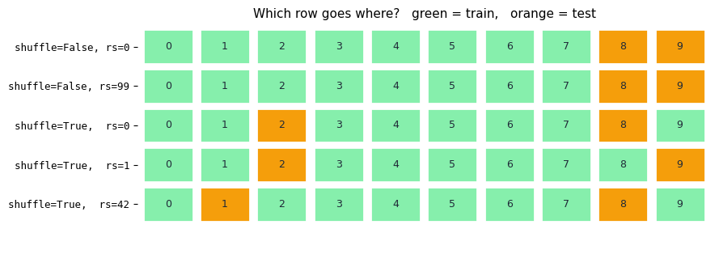
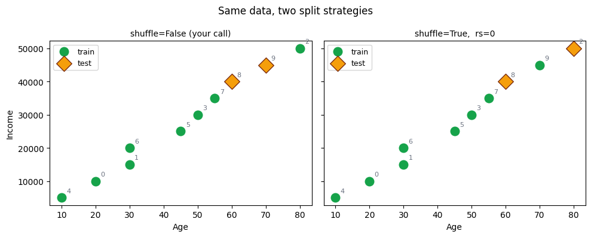
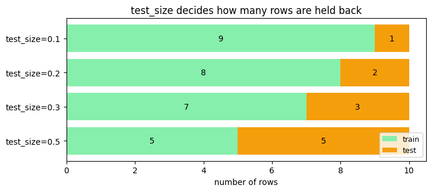

Hiding some rows before you start is the only way to find out if the model actually learned.
2 notebooks · 1 note
The problem behind this topic
Sanjay trained a model and scored it on the same rows he trained it with. 100%. Perfect.
He shipped it. On real customers it was barely better than guessing.
He had given the student the exam paper during the lesson. Reciting answers you have already seen proves nothing about the next question.
train_test_split hides a slice of rows before learning starts. The model never sees them, so the score on those rows is the first honest number you get.
🔑 The one idea
Score on rows the model has never seen, or you are measuring memory instead of skill.
Train / Test / Predict, from Scratch — Field Notes
The companion notebook is
23_Simple_Dataset_Practice.ipynb —
20 students, one feature (Hours_Studied), one target (Passed). This
note is the clean summary of everything that came out of that
notebook's step-by-step build, for whenever you want the picture without
re-reading every cell.
The data
Student
Hours Studied
Passed?
1–9
1–9
0 (all failed)
10
10
1 (surprise pass)
11–12
11–12
0 (surprise fails)
13–20
13–20
1 (all passed)
20 rows, deliberately not a perfectly clean line — students 10, 11,
12 break the obvious pattern on purpose, so the model has something
real to figure out.
Diagram 1 — the full pipeline
flow diagram (rendered in the notebook)
flowchart TD
A["Block A\ndataset\n20 students, 2 columns"] --> B["Block B\nX = dataset.drop(columns=['Passed'])"]
A --> C["Block C\ny = dataset['Passed']"]
B --> D["Block D\ntrain_test_split(X, y, test_size=0.2,\nrandom_state=42, stratify=y)"]
C --> D
D --> E["Block E\nX_train (16 students)"]
D --> F["Block F\nX_test (4 students)"]
D --> G["Block G\ny_train (16 answers)"]
D --> H["Block H\ny_test (4 answers)"]
E --> I["Block I\nmodel.fit(X_train, y_train)"]
G --> I
I --> J["Block J\ntrained model:\nHours_Studied <= 12.50"]
J --> K["Block K\nmodel.predict(X_test)"]
F --> K
K --> L["Block L\ny_pred (4 guesses)"]
L --> M["Block M\naccuracy_score(y_test, y_pred)"]
H --> M
M --> N["Block N\naccuracy = 1.0 (4 of 4 correct)"]
style A fill:#8a8f98,color:#fff
style D fill:#2a78d6,color:#fff
style I fill:#2a78d6,color:#fff
style K fill:#eb6834,color:#fff
style N fill:#2f9e6f,color:#fff
Why each block exists
A — dataset. One shared table. Everything below is a slice of
it, so rows can never get mismatched.
B — X. Drops Passed. Purpose: the model must never see the
answer while learning, or the score means nothing.
C — y. Just Passed, saved separately — needed later to teach
(G) and to grade (H), never as an input.
D — train_test_split. Shuffles X/y together, then cuts into
two pools — one to learn from, one untouched, to prove the learning
is real.
E / F — X_train (16) / X_test (4). The bigger share trains;
the held-back share tests honestly.
G / H — y_train / y_test.G teaches. H stays locked away
from prediction — it only exists to grade, at M.
I — .fit(X_train, y_train). The actual training: search every
possible cutoff, keep whichever one makes the fewest mistakes. See
Diagram 2 for the full mechanics.
J — the trained model. One rule, sitting in memory:
Hours_Studied <= 12.50 → fail, else → pass. Nothing predicted yet.
K — .predict(X_test). Runs that one rule against 4 unseen
students. Only features go in — y_test never touches this step.
L — y_pred. The model's 4 guesses, made blind.
M — accuracy_score. The one place y_test finally gets used —
purely to grade guesses that already exist.
N — 1.0. All 4 guesses matched. A genuinely good result here,
not a guaranteed one — see the note at the end.
Diagram 2 — how .fit() actually finds 12.50
flow diagram (rendered in the notebook)
flowchart TD
START["16 training students\nHours_Studied + real Passed answer,\nsorted: 1,2,3,5,6,8,9,10,11,12,13,14,15,17,18,20"] --> T1
START --> T2
START --> T3
START --> T4
subgraph TRY ["Try candidate cutoff lines, one at a time"]
T1["Line 9.5\nLeft: 7 students, 0 passed -> guess FAIL\nRight: 9 students, 7 passed -> guess PASS\nMistakes: 0 + 2 = 2"]
T2["Line 11.5\nLeft: 9 students, 1 passed -> guess FAIL\nRight: 7 students, 6 passed -> guess PASS\nMistakes: 1 + 1 = 2"]
T3["Line 12.5\nLeft: 10 students, 1 passed -> guess FAIL\nRight: 6 students, 6 passed -> guess PASS\nMistakes: 1 + 0 = 1"]
T4["Line 13.5\nLeft: 11 students, 2 passed -> guess FAIL\nRight: 5 students, 5 passed -> guess PASS\nMistakes: 2 + 0 = 2"]
end
T1 --> COMPARE
T2 --> COMPARE
T3 --> COMPARE
T4 --> COMPARE
COMPARE{"Line up every mistake count\ntried: ...3, 2, 2, 1, 2, 3...\n(plus every other candidate\nfrom 1.5 up to 19.0)"}
COMPARE --> WINNER["WINNER: Hours_Studied <= 12.50\nfewest mistakes of every\nline tried: just 1 out of 16"]
WINNER --> STORED["Stored inside model as its\none and only rule (max_depth=1)"]
style START fill:#8a8f98,color:#fff
style T3 fill:#2f9e6f,color:#fff
style WINNER fill:#2f9e6f,color:#fff
style STORED fill:#2a78d6,color:#fff
This isn't the full set of candidates — .fit() actually tries every
midpoint between neighboring Hours_Studied values in the training
data (1.5, 2.5, 4.0, 5.5, 7.0, 8.5, 9.5, 10.5, 11.5, 12.5, 13.5, 14.5, 16.0, 17.5, 19.0 — 15 candidates total for these 16 students). The
diagram zooms in on the 4 closest to the winner so the comparison is
readable; every other candidate scored worse still (up to 7 mistakes at
the extreme ends, like a line at 1.5).
.fit() isn't guesswork — it's brute-force search over every one of
those candidates, scored by mistakes, keeping the single best. Proven
by hand in the notebook: 12.5 makes 1 mistake (student 10, who
passed despite only 10 hours); its closest rivals (9.5, 11.5,
13.5) all make 2.
The same story, told plainly
Twenty real students studied for an exam, for different numbers of
hours. We already know, from records, who passed and who failed —
that's dataset.
To test whether "hours studied" can predict "pass or fail," we hide the
real results from 4 of the 20 students (X_test/y_test) and only let
the model study the other 16, answers included (X_train/y_train).
The model studies those 16 by trying out every possible "cutoff" —
what if I guessed everyone under this many hours fails, and everyone
over it passes? — and checks each guess against what those 16
students actually did. Whichever cutoff is wrong the fewest times
becomes its one rule: 12.50 hours.
Then it's tested: given only the 4 hidden students' study hours (never
their real results), it applies that one rule and guesses. Only after
guessing do we reveal the real results and check — 4 out of 4 correct.
FAQ — the questions that came up along the way
Does y_test "identify" who passes or fails?
No. y_test is pre-existing data — the real, already-known result for
those 4 students, typed in by hand back when the dataset was built. It
never computes or predicts anything. It only gets used once, at the
very end, to grade y_pred — the model's guess, made without ever
seeing it.
What does "mistake" mean in the threshold search?
For a candidate line, every student on one side gets the same single
guess (whatever the majority of that side actually did). "Mistakes" =
how many real students on that side don't match that one guess. Sum
both sides for the total.
Why 12.50 and not 9.5 or 11.5?
All were tried. 12.5 scored 1 total mistake; every neighboring
candidate scored 2 or more. Not a close call — a clean win, verified in
the notebook by listing all 16 training students individually.
Is a perfect 1.0 test score normal?
Not guaranteed — it happened here because all 4 test students landed
clearly on one side of 12.50, away from the messy middle where
students 10–12 live. With only 4 test rows, one wrong guess would
have dropped the score to 0.75.
Status: 🟡 Learning. This notebook covers splitting data only. No model is trained yet.
What is scikit-learn?
scikit-learn is the standard Python library for classical machine learning —
everything before neural networks. Regression, decision trees, clustering, scaling,
encoding, and model evaluation all live here.
It sits on top of NumPy and Pandas. You hand it a table of numbers. It hands back
either a cleaned table or a prediction.
The shape of the whole library
Every object in scikit-learn is an estimator, and estimators have three verbs:
.fit(X, y) LEARN read the data, remember what you found
.transform(X) RESHAPE apply what you learned, return a new X
.predict(X) ANSWER apply what you learned, return a prediction
Anything learned during fit is stored with a trailing underscore — model.coef_,
scaler.mean_. No underscore means you supplied it. Underscore means the data taught it.
train_test_split is not an estimator. It is a plain function. But it comes first,
before any estimator, and this notebook explains why.
Step 0 — Imports
codecell 1
import pandas as pd
from sklearn.model_selection import train_test_split
Step 1 — Load the data
The dataset lives in the Pandas folder, one level up from here:
02_data_toolkit_apps/
├── 02_pandas/
│ └── DataSet/
│ └── age1.csv <- the file we read
└── 08_sklearn/
└── example_01.ipynb <- we are here
../../../01_Python/03_Pandas/Data/age1.csv is a relative path. It starts from the folder
holding this notebook. .. steps up one level, then we walk back down.
A path starting with / means the root of the whole computer, not the root of this
repository. That mistake raises FileNotFoundError even though the file clearly exists.
Two names, and the capitalisation is a real convention:
Name
Meaning
Why the case
X
the input — what the model is allowed to see
Capital, because it is normally a 2-D table of many columns
y
the target — what the model must predict
Lowercase, because it is normally a single 1-D column
Here Age is the input and Income is the target. The question being set up is:
given a person's age, can we predict their income?
One thing to know for later.data1['Age'] returns a Series, which is 1-D.
train_test_split is happy with that. But when you later call model.fit(X, y),
scikit-learn will demand a 2-D X and raise an error asking you to reshape.
data1[['Age']] — with double brackets — returns a 1-column DataFrame, which is
already 2-D. Not needed yet; remember it for the first model.
codecell 5
X = data1['Age']
Y = data1['Income']
Step 3 — The split, parameter by parameter
X_train, X_test, y_train, y_test = train_test_split(X, Y, test_size=0.2, random_state=0, shuffle=False)
Why split at all?
A model that is scored on the same rows it learned from will always look brilliant.
That is memorisation, not learning. So you hide some rows, train on the rest, and score
against the hidden ones. Those hidden rows are the only honest measure you have.
10 rows
↓
SPLIT ──→ 8 train rows ──→ the model learns from these
└─→ 2 test rows ──→ never seen during training, used only to score
Engineering view. It is a holdout set, the same idea as keeping a validation dataset
your integration tests never train against. The moment the model sees a test row, that
row stops measuring anything.
Every parameter
Parameter
What it does
Default
X, Y
The arrays to split. You may pass several; each is split the same way, so rows stay aligned.
required
test_size
Size of the test part. A float is a fraction (0.2 = 20%); an int is a row count.
0.25
train_size
The other side. Normally left alone — it is inferred from test_size.
None
shuffle
Whether to mix the rows before cutting. This is the important one.
True
random_state
Seed for the shuffling, so a "random" split is repeatable.
None
stratify
Keep the class balance of a column in both parts. Used for classification.
Getting the order wrong is a classic bug. It does not raise an error — it just silently
trains on the wrong data. Note that it is X, X, y, y — not X, y, X, y.
codecell 7
X_train, X_test, y_train, y_test = train_test_split(X, Y, test_size=0.2,random_state=0, shuffle=False)
# I wanted t you to test the with different values show me those outputs in different visulisation ways like changing the random state , then huffle , i wanted to explain each and every bit of this method
Step 4 — Read the result
Print all four parts. Watch the index numbers on the left of each Series — those are
the original row labels, and they tell you exactly which rows were taken.
You asked to see what happens with different values. Below, each parameter is changed
on its own so you can see precisely what it controls.
First a small helper that reports which original rows ended up in the test set.
Everything after this uses it.
codecell 11
def test_rows(**kwargs):
"""Return the original row labels that land in the test set."""
_, X_test, _, _ = train_test_split(X, Y, **kwargs)
return list(X_test.index)
print("your current settings ->", test_rows(test_size=0.2, random_state=0, shuffle=False))
Output
your current settings -> [8, 9]
Experiment 1 — shuffle=False makes random_state do nothing
Your call passes random_state=0andshuffle=False. These two fight each other.
random_state seeds the shuffling. If there is no shuffling, there is nothing to seed.
The split becomes a plain slice: take the last 20% of the rows, in file order.
Change the seed to anything you like and the answer will not move.
codecell 13
a = test_rows(test_size=0.2, random_state=0, shuffle=False)
b = test_rows(test_size=0.2, random_state=99, shuffle=False)
c = test_rows(test_size=0.2, random_state=1234, shuffle=False)
print("random_state=0 ->", a)
print("random_state=99 ->", b)
print("random_state=1234 ->", c)
print()
print("all identical:", a == b == c)
print("-> with shuffle=False, random_state is ignored completely")
Output
random_state=0 -> [8, 9]
random_state=99 -> [8, 9]
random_state=1234 -> [8, 9]
all identical: True
-> with shuffle=False, random_state is ignored completely
Why this matters.shuffle=False is not neutral. It hands you whatever happens to
sit at the bottom of the file.
If a CSV is sorted — by date, by customer, by class label — the last 20% is a biased
sample. Imagine the file were sorted by age: your test set would contain only the oldest
people, and your score would be meaningless.
shuffle=False is correct in exactly one common case: time series, where you must
train on the past and test on the future, and shuffling would leak tomorrow into today.
For ordinary tabular data like this, leave shuffle at its default True.
Experiment 2 — random_state with shuffling turned on
Now shuffle is at its default (True), so the seed actually does something.
Each seed picks a different pair of rows.
codecell 16
for rs in [0, 1, 42]:
print(f"random_state={rs:<3} -> test rows {test_rows(test_size=0.2, random_state=rs)}")
print()
print("Same seed, called twice:")
print(" ", test_rows(test_size=0.2, random_state=7))
print(" ", test_rows(test_size=0.2, random_state=7), " <- identical, every time")
print()
print("No seed at all (random_state=None), called twice:")
print(" ", test_rows(test_size=0.2))
print(" ", test_rows(test_size=0.2), " <- different, every run")
Output
random_state=0 -> test rows [2, 8]
random_state=1 -> test rows [2, 9]
random_state=42 -> test rows [8, 1]
Same seed, called twice:
[8, 5]
[8, 5] <- identical, every time
No seed at all (random_state=None), called twice:
[1, 7]
[0, 2] <- different, every run
What random_state really buys you: reproducibility, not randomness.
Without a seed, every run reshuffles. Your accuracy score moves between runs and you
cannot tell whether a change you made helped, or whether you simply got a friendlier
split. Debugging becomes guesswork.
With a fixed seed, the split is identical forever. Anyone who clones this repository and
runs the notebook sees your exact numbers.
Engineering view. It is a fixed seed in a test fixture. You are not trying to remove
randomness — you are pinning it so results are comparable. The particular value (0,
42, 7) means nothing. Only its fixedness matters.
⚠️ Never tune the seed. Trying seeds until the score looks good is fitting to the test
set, which is the thing splitting was supposed to prevent.
Visualisation 1 — which row goes where
Printing indexes works, but a picture makes the pattern obvious. Each square is one row
of the dataset, labelled with its index. Green = train, orange = test.
Read the first two rows of the chart together: they are different seeds with
shuffle=False, and they are identical. That is Experiment 1, drawn.
codecell 19
import matplotlib.pyplot as plt
configs = [
("shuffle=False, rs=0", dict(test_size=0.2, random_state=0, shuffle=False)),
("shuffle=False, rs=99", dict(test_size=0.2, random_state=99, shuffle=False)),
("shuffle=True, rs=0", dict(test_size=0.2, random_state=0)),
("shuffle=True, rs=1", dict(test_size=0.2, random_state=1)),
("shuffle=True, rs=42", dict(test_size=0.2, random_state=42)),
]
fig, ax = plt.subplots(figsize=(9, 3.4))
for row, (label, kw) in enumerate(configs):
held_out = test_rows(**kw)
for col in range(len(X)):
is_test = col in held_out
ax.add_patch(plt.Rectangle((col, -row), 0.88, 0.88,
facecolor="#f59e0b" if is_test else "#86efac",
edgecolor="white", linewidth=2))
ax.text(col + 0.44, -row + 0.44, str(col),
ha="center", va="center", fontsize=9, color="#1f2937")
ax.set_xlim(-0.1, len(X)); ax.set_ylim(-len(configs) + 0.05, 1.0)
ax.set_yticks([-r + 0.44 for r in range(len(configs))])
ax.set_yticklabels([c[0] for c in configs], fontsize=9, family="monospace")
ax.set_xticks([]); ax.set_frame_on(False)
ax.set_title("Which row goes where? green = train, orange = test", fontsize=11)
plt.tight_layout()
plt.show()

Output from this notebook.
Visualisation 2 — the same split on the real data
The grid above shows positions. This shows the actual Age and Income values, so
you can see what kind of people end up in the test set.
With shuffle=False the test set is whatever sits at the end of the file. With
shuffle=True it is drawn from across the range.
codecell 21
pairs = [
("shuffle=False (your call)", dict(test_size=0.2, random_state=0, shuffle=False)),
("shuffle=True, rs=0", dict(test_size=0.2, random_state=0)),
]
fig, axes = plt.subplots(1, 2, figsize=(10, 4), sharex=True, sharey=True)
for ax, (label, kw) in zip(axes, pairs):
held_out = test_rows(**kw)
kept = [i for i in X.index if i not in held_out]
ax.scatter(X.loc[kept], Y.loc[kept], s=110, c="#16a34a", label="train")
ax.scatter(X.loc[held_out], Y.loc[held_out], s=170, c="#f59e0b",
marker="D", edgecolor="#7c2d12", label="test")
for i in X.index:
ax.annotate(str(i), (X.loc[i], Y.loc[i]), fontsize=8,
xytext=(6, 6), textcoords="offset points", color="#6b7280")
ax.set_title(label, fontsize=10)
ax.set_xlabel("Age")
ax.legend(loc="upper left", fontsize=9)
axes[0].set_ylabel("Income")
fig.suptitle("Same data, two split strategies", fontsize=12)
plt.tight_layout()
plt.show()

Output from this notebook.
Experiment 3 — test_size controls how much you hold back
test_size=0.2 means 20% of rows go to test. With 10 rows that is 2.
The trade-off is real and has no perfect answer:
Too small a test set — the score is noisy. With 2 rows, one unusual person swings
your accuracy by 50%.
Too large a test set — the model has less to learn from and looks worse than it is.
0.2 and 0.25 are the usual defaults. On a genuinely small dataset like this one,
neither is really enough, and cross-validation is the proper answer. That comes later.
codecell 23
sizes = [0.1, 0.2, 0.3, 0.5]
counts = []
for ts in sizes:
X_tr, X_te, _, _ = train_test_split(X, Y, test_size=ts, random_state=0)
counts.append((len(X_tr), len(X_te)))
print(f"test_size={ts} -> train {len(X_tr)} rows, test {len(X_te)} rows")
labels = [f"test_size={s}" for s in sizes]
train_n = [c[0] for c in counts]
test_n = [c[1] for c in counts]
fig, ax = plt.subplots(figsize=(7.5, 3.4))
ax.barh(labels, train_n, color="#86efac", label="train")
ax.barh(labels, test_n, left=train_n, color="#f59e0b", label="test")
for i, (a, b) in enumerate(counts):
ax.text(a / 2, i, str(a), ha="center", va="center", fontsize=10)
ax.text(a + b / 2, i, str(b), ha="center", va="center", fontsize=10)
ax.set_xlabel("number of rows")
ax.set_title("test_size decides how many rows are held back")
ax.legend(loc="lower right", fontsize=9)
ax.invert_yaxis()
plt.tight_layout()
plt.show()
Output
test_size=0.1 -> train 9 rows, test 1 rows
test_size=0.2 -> train 8 rows, test 2 rows
test_size=0.3 -> train 7 rows, test 3 rows
test_size=0.5 -> train 5 rows, test 5 rows

Output from this notebook.
Gotcha — stratify cannot work without shuffling
stratify keeps the balance of a class column the same in both parts. If 30% of your
rows are "fraud", stratifying keeps 30% fraud in train and in test.
It needs to choose rows freely to do that, so it cannot run on an ordered slice.
Combining it with shuffle=False raises an error rather than quietly misbehaving —
which is the good kind of API design.
codecell 25
try:
train_test_split(X, Y, test_size=0.2, shuffle=False, stratify=Y)
except ValueError as e:
print("ValueError:", e)
Output
ValueError: Stratified train/test split is not implemented for shuffle=False
What this means for your code
X_train, X_test, y_train, y_test = train_test_split(X, Y, test_size=0.2, random_state=0, shuffle=False)
The call is correct and it runs. Two observations, not corrections:
random_state=0 is doing nothing here, because shuffle=False turns shuffling
off. Keeping both is harmless but misleading to a reader — it looks like a
reproducible random split when it is actually a fixed slice. Either drop
random_state, or drop shuffle=False and let the seed matter.
shuffle=False on ordinary tabular data is usually not what you want. It is the
right choice for time series. For this dataset, the default shuffle=True gives a
more representative test set.
Try removing shuffle=False from your cell above and re-running the prints. Compare the
index numbers to Visualisation 1.
Common mistakes
Mistake
What goes wrong
Unpacking as X_train, y_train, X_test, y_test
Returns are X, X, y, y. No error is raised — you just train on the wrong arrays.
Splitting after scaling or encoding
The transformer already saw the test rows. This is data leakage and your score becomes a lie. Split first, always.
Changing random_state until the score improves
You are now fitting to the test set. Fix the seed once and leave it.
Passing shuffle=False on sorted data
The test set is a biased slice of whatever the file ends with.
Using stratify on a continuous target
It only makes sense for classes. On Income it would try to balance 10 distinct values.
Key takeaway
If you remember only one thing:train_test_split returns
X_train, X_test, y_train, y_test in that order, and random_state only means
anything when shuffle=True. Split before you learn anything from the data — including
scaling and encoding — or the test set stops being a test.
Starting Over, Simple — Train / Test / Predict, from Scratch
22_Forward_Backward_Practice.ipynb moved too fast, with 5 features and
noise mixed in. This file uses the smallest possible dataset instead —
one feature, numbers you can check by eye — and goes one single step at
a time. Nothing gets typed until you understand why it's the next
step, not just what to type.
Step 1 — Import pandas
pandas gives us the DataFrame — a table where rows and columns stay
lined up together. Every step below builds on top of a DataFrame, so
this import always comes first, before anything else can run.
codecell 2
import pandas as pd
Step 2 — Build the dataset by hand
Two plain Python lists, hours_studied and passed, written in matching
order — position 1 in both lists belongs to student 1, position 2 to
student 2, and so on. pd.DataFrame({...}) glues the two lists into one
table, column by column.
The last two lines just relabel the row numbers as Student (1 to
20) instead of pandas' default 0 to 19 — purely for readability.
Student is never treated as real data the model can use; it's only a
name for each row, not a feature.
X is everything the model is allowed to see — here, just
Hours_Studied, since we drop Passed. y is the answer key,
Passed on its own, kept separate.
This has to happen before training: if Passed stayed inside X, the
model could read the real answer straight off its own input instead of
learning a genuine pattern from Hours_Studied — the resulting score
would be meaningless.
codecell 6
X = dataset.drop(columns=["Passed"])
y = dataset["Passed"]
Step 3 (continued) — Confirm the shapes
A quick sanity check before moving on. X should come back as a table —
2 numbers, rows and columns — even with only 1 feature column. y
should come back as a flat list — 1 number, just a count of values —
since it's a single column pulled out on its own, not a table.
codecell 8
X.shape, y.shape
Output
((20, 1), (20,))
Step 4 — Split into train and test
We need two separate pools of students: one to actually teach the model
(X_train/y_train), and a second pool the model never sees during
training (X_test/y_test) — so there's an honest way to check
afterward whether it learned something real, instead of just memorizing.
test_size=0.2 reserves 20% of the 20 students for that second,
held-back pool.
random_state=42 fixes the shuffle, so it's identical every time this
cell reruns.
stratify=y keeps the pass/fail mix in both pools close to the full
dataset's mix, instead of risking an unlucky shuffle that dumps most
of one class into a single pool.
codecell 10
from sklearn.model_selection import train_test_split
X_train, X_test, y_train, y_test = train_test_split(
X, y, test_size=0.2, random_state=42, stratify=y
)
X_train.shape, X_test.shape
Output
((16, 1), (4, 1))
Step 5 — Build the model, and train it
DecisionTreeClassifier(max_depth=1, ...) creates a model that's only
allowed to ask one single yes/no question before giving its final
answer — kept this simple on purpose, so every part of it can be
checked by hand.
model.fit(X_train, y_train) is the actual training step. Here is
exactly what it does, in order:
Look at all 16 training students' Hours_Studied values, together
with their real Passed answers.
Try every possible dividing line between neighboring Hours_Studied
values in the training data (1.5, 2.5, 4.0, ... 19.0).
For each candidate line, split the 16 students into a left group and
a right group. For each group, guess whatever the majority of that
group actually did — e.g. if most of the left group failed, guess
"fail" for the whole left group.
Count how many real students that guess gets wrong, for every
candidate line.
Keep whichever line makes the fewest mistakes. Here, that line is
Hours_Studied <= 12.50, with only 1 mistake out of 16 (student 10,
who studied just 10 hours but passed anyway).
Nothing here is guesswork — .fit() is a brute-force search over every
possible line, scored by mistakes, keeping the best one. It just runs
in milliseconds instead of by hand.
codecell 12
from sklearn.tree import DecisionTreeClassifier
model = DecisionTreeClassifier(max_depth=1, random_state=42)
model.fit(X_train, y_train)
Not just an assertion — here's the mistake count for every candidate
line near the middle, computed by hand from the 16 training students:
candidate line
left group
left guess
mistakes (left)
right group
right guess
mistakes (right)
total mistakes
8.5
1,2,3,5,6,8 (0 passed)
"fail"
0
9,10,11,12,13,14,15,17,18,20 (7 passed)
"pass"
3
3
9.5
1,2,3,5,6,8,9 (0 passed)
"fail"
0
10,11,12,13,14,15,17,18,20 (7 passed)
"pass"
2
2
11.5
1,2,3,5,6,8,9,10,11 (1 passed)
"fail"
1
12,13,14,15,17,18,20 (6 passed)
"pass"
1
2
12.5
1,2,3,5,6,8,9,10,11,12 (1 passed)
"fail"
1
13,14,15,17,18,20 (6 passed)
"pass"
0
1
13.5
1,2,3,5,6,8,9,10,11,12,13 (2 passed)
"fail"
2
14,15,17,18,20 (5 passed)
"pass"
0
2
12.5 is the only line with just 1 mistake — every neighboring
candidate makes at least 2.
Now the same winning line, but every one of the 16 students listed
individually, so "mistake" has nothing hidden in it:
Left of 12.5 — the tree's one guess for this whole group is
"fail" (9 out of 10 actually failed):
Student
Hours
Real answer
Group's guess
Mistake?
1
1
0 (failed)
0 (fail)
No
2
2
0
0
No
3
3
0
0
No
5
5
0
0
No
6
6
0
0
No
8
8
0
0
No
9
9
0
0
No
10
10
1 (passed)
0 (fail)
YES
11
11
0
0
No
12
12
0
0
No
Right of 12.5 — the tree's one guess for this whole group is
"pass" (all 6 actually passed):
Student
Hours
Real answer
Group's guess
Mistake?
13
13
1 (passed)
1 (pass)
No
14
14
1
1
No
15
15
1
1
No
17
17
1
1
No
18
18
1
1
No
20
20
1
1
No
1 mistake on the left (student 10) +0 mistakes on the right
=1 total mistake — the number that made 12.5 beat every other
candidate line above.
Step 6 — Look inside the trained model
.fit() doesn't print anything by itself — the tree it built is just
sitting inside model, in memory. export_text() turns that into a
readable printout, so we can actually see the one question it settled
on (Hours_Studied <= 12.50) and what it guesses on each side
(class: 0 = fail, class: 1 = pass).
codecell 15
from sklearn.tree import export_text
print(export_text(model, feature_names=["Hours_Studied"]))
A number-line plot of all 16 training students, positioned by
Hours_Studied, colored by their real Passed answer (blue = failed,
orange = passed). The dashed line marks 12.50 — the exact cutoff
.fit() found back in Step 5. This is the same result as the
mistake-counting table from Step 5, just drawn instead of counted, so
"1 mistake on the left, 0 mistakes on the right" is visible at a
glance.
model.predict(X_test) runs the one rule .fit() found
(Hours_Studied <= 12.50 → fail, else pass) against the 4 students the
model has never seen, and returns one guess per row, in the same row
order as X_test.
codecell 19
from sklearn.metrics import accuracy_score
y_pred = model.predict(X_test)
y_pred
Output
array([0, 1, 1, 0])
Step 8 (continued) — The real answers, to compare against
y_test never got shown to the model at any point — not during
.fit(), not during .predict(). Printing it now, only after the
guesses already exist, is purely for grading — same rule as the
flashcard story from Step 4.
accuracy_score(y_test, y_pred) lines up both lists row by row, counts
how many match, and divides by the total. Exactly the same "count the
mistakes" idea from Step 5 — just run once, on 4 brand-new students the
rule has never seen before.
codecell 23
accuracy_score(y_test, y_pred)
Output
1.0
The result: 100% — checked by hand
All 4 test students, using nothing but the single rule
Hours_Studied <= 12.50:
Student
Hours
Rule says
Real answer
Match?
4
4
4 <= 12.50 → fail (0)
0
Yes
7
7
7 <= 12.50 → fail (0)
0
Yes
16
16
16 > 12.50 → pass (1)
1
Yes
19
19
19 > 12.50 → pass (1)
1
Yes
4 out of 4 correct → accuracy_score returns 1.0. Worth noticing: this
isn't the guaranteed outcome of training a model — it's a genuinely
good result here because the test students all happened to sit clearly
on one side of 12.50 or the other, nowhere near the messy middle where
student 10 and student 12 live. A tiny test set like this (just 4
students) also means every single row matters a lot to the score — one
wrong guess here would have dropped it straight to 0.75.
That's the full loop, start to finish: build data → split → train →
inspect → predict → grade. Same shape as 20_Feature_Selection_techniques.ipynb
and 22_Forward_Backward_Practice.ipynb, just small enough this time to
verify every single number by hand.